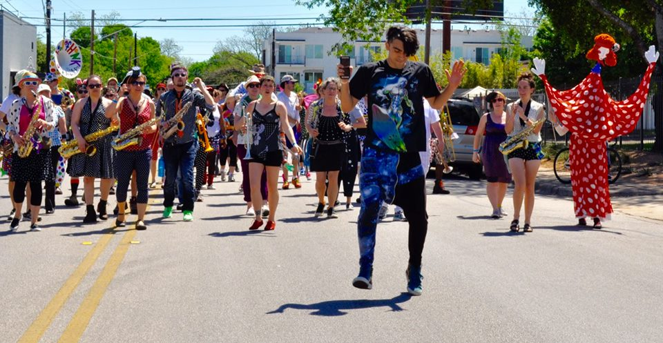

video by Patrick Johnson, saxophone with School of HONK
What a trip it was! Friends I haven't seen in ages, playing with my new friends from School, in a place that's become a second home to me. It was Datri grooving with us on pBone, Carmen and Shawn with trombones on the swing, Candy's first calls during our magnificent parade, Maggie's trumpet (and radio) testimonials, countless conversations and revelations with my bandmates, the enthusiasm of the Austin students who jumped right into our band, the heroic performance and support of all our irreplaceable mentors, the amazing sound of our School on the Sunday stage, and the slow but unmistakable spread of polka dot fashion all weekend long. It was also delicious food, outdoors, in spring time. And Monday's bike excursion and rooftop lunch with Shaunalynn and Elizabeth was the perfect finish. Upon my return, I felt like I knew and loved myself, and my friends, more. What else could I ask of a musical journey? Thanks a mil to our hosts, and our big, beautiful krewe, for such a magical experience.
I want to say something about my joyous experience in Austin, but I can't find enough words to express myself. The sounds, the colors, the sharing, the warmth of the Austin people made my weekend there a truly enlightening experience.
Playing with School of HONK! has honestly been one of the funnest experiences of my life, as well as one of the most welcoming communities I've ever been a part of. Our trip to Austin definitely felt like a culmination of our year-and-a-half of honking together.
I especially remember...
I'm so grateful to everyone who helped create School of HONK!, and who made HONK!TX happen, and I hope School of HONK! continues to cause extreme fun in the Boston area over the next few years.
They say the third time's the charm, and so it was with my third HONK!TX.
Band trips to Austin have never left me wanting, but this was a truly unique and special adventure for me, to be there with a contingent of our School of HONK community. There are many points during the weekend worthy of being highlighted, but one of my favorite-ever HONK!-fest-related moments happened on Thursday night. The energy, the smiles shining brightly through the dark, the dancing, the camaraderie amongst those of us who had arrived by that point to play the pre-HONK!TX fundraiser.. I was gushing with adrenaline and pride by the end of our set, which was the first set of the night, and the literal starting note of the entire weekend to come. We had the crowd singing, dancing, and playing along with us by the end. One heck of an opening act! Thursday night truly set the tone for me for what would turn out to be a weekend of musical coming-togetherness and growth.
I was also deeply touched by and impressed with the self-sufficiency of our group, and with the general prevailing spirit of willingness to pitch in where needed. Thanks to so many, the burden was much lighter for all, and everything worked!
Finally, I loved our open rehearsal, and how we welcomed so many into our process so quickly and automatically. I loved the sunshine. I loved van rides here and there with great people. I loved watching others have their first jams/loose musical moments with people outside our group. I loved Candy's first "call" during Rock Athem on parade. I loved singing Disney songs in Italian to Dani before going to sleep. I loved the polka dots. I loved how so many musicians from other bands loved the polka dots. I loved meeting musicians from the general Austin area who came away from the fest wanting to cultivate something like SoH in their city. I loved the homemade potluck spread on Saturday night. I loved having the chance to play on the plane ride home with some SoH'ers. And if we return in future years, I look forward to extending the experience to many many more of our School of HONK friends!
Some of my favorite memories were:
One of my most memorable experiences was riding home from the Saturday after party at the Spiderhouse. Kunle, Shawn, Alex, Christiana, Carmen, and myself were riding back to south Austin from the Spiderhouse around 1am. The ride was super fun, with the streets empty and all of us psyched after the earlier festivities. While attempting to go across the river, we took a slight detour and ended up going over a footbridge instead of our intended crossing. As we were nearing the top of the footbridge, someone called out, "I hear some saxes" or something to that effect. Then, as we peered down over the edge, we saw an enormous spiral ramp leading down to a circular patio far below at the base. In the middle, were five bari sax players and one homeless-looking guy with a spoon jamming. We all spiraled down the ramp and watched them for a bit, which is where the below video was from. I played a few notes on my trumpet for no good reason, and they responded by mocking my high pitch in their jamming.
Wow, this is so great! I love getting together for music dance and merrymaking together as a happy little band! Going to Texas with y'all was an incredible treat in so many dimensions.
I especially feel gratitude and happiness about...
At Honk!Texas I felt like I was being allowed to play with the big kids! As a youngest child growing up, this is a powerful experience. And I think there's no better way to learn. I only wish the Honk! world had existed when I was little...
My straight-laced big cousin, who I barely know, came to the parade. He knows me better now! And said he bragged to some people that his cousin was part of Honk! Texas.
A woman and her small child couldn't believe that they were both invited to join our band - she was in tears when I made that clear!
More smiles and laughs happen during Honk! events than your average day; this can change the world! I'd like to help spread this gospel.
I ran into three men (two in their 70s) I once played music with in a desert years ago.
Bonding with my bandmates/roomies Liz and Merrilyn and showing off our dots!
Johnny's Bow Tie
Susan's Little Hat
Jam Sessions
Staying up late at the Hotel Vegas to hear 3 great bands including Minor Mishap with my HONK!TX host Ken on tenor sax.
The SOH Open Rehearsal and Afternoon Performance with new students
(especially the little boy with the trumpet at the performance.)
Grabbing a beer on the veranda with Merrilyn, Johnny, and David
Plus lots of dancing! (no pic-too busy dancing!)
Meandering van trips with Candy; swimming against the current with Liz; talking Ray Carney and moon milk with Patrick; spotting Susan's tiny hat in every landscape; swapping a pork slider for an authentic Russian fur with Vladimir; helping Dani mount her polka dotted puppet; meeting Merrilyn over and over in alleys when all we were looking for was moments to ourselves; bartering the bathroom with Josh; singing and smiling with Maggie; following Rosalie's whole-self conduction; bumping into Ruthann and Ezra on foot and bike ways; talking ethics and life path with Tony; smiling at Chalo, my 5 year long hey guy and counting; making mac & cheese medallions with Kunle; establishing the importance of scent & attraction with Carmen and Christiana; sunsets over lakes and bike rides along rivers with Kevin; this guy doing the macarena to Rock Anthem at the end of Sunday's parade.
The first time I saw Datri Bean the lights went dim and a glittery spotlight poured down over her...
...and the whole room began to move in slow motion as Gary Wright's "Dream Weaver" played in my mind. It was clear that the majestic leader of Minor Mishap was a legend, even before I had my mind completely blown upon learning that she freakin' composed Track Suit (!!!). I love the way she lead her band- fully embodied, as if she held the song inside of her and each player was personally challenged to pull it out of her out like a long, smooth silk ribbon. Having just started to lead songs myself with SoH, I had found an inspiration. After their incredible (and incredibly loud!) set at Hotel Vegas, my delightful host Jenni, a star player in MM, graciously introduced me to Datri. I managed to spit out a few awkward gems like "you did that" and "that was like. really good." That's pretty much how it goes when I meet someone really cool.
The next day, in the shocking brightness of the Austin sun, we held our open rehearsal in the parking lot of the Spider House Ballroom. This set felt very important to me. If felt like it was our chance to prove ourselves as not just that "aw, cute, they're learning!" band, but rather as a community of people who see learning as integral to living, who wisely accept the vulnerability of learning publicly, who know that to play a song the operative word is play, and who want to invite others to grapple with the desire to learn something in the face of so many things in the world saying you shouldn't. That, to me, is what School of Honk is about, and this was our time to share that.
I remember a couple of women waiting patiently on the curbside who caught my eye. They had that nervous yet eager look I often see on Sundays when first-time players come out to School of Honk. I approached them and saw they had their eyes on two vibrant p-bones. In utter contrast to my dingbat comments the night before, I spoke with complete confidence and enthusiasm as I showed them how to hold a trombone, a skill I myself had learned just a few days ago. They were thrilled to have their hands on them, and so I introduced them to Big Dave to get them going on their first trombone lesson. As they walked off, one of them turned back and appreciatively thanked me for getting her set up. And whadayaknow, I had to blink my eyes a couple of times to realize, it was none other than Datri Bean. The same Datri Bean I had seen in a glittery spotlight and said "you did that" to. Without the makeup and plastic nymph horns I almost did not recognize her. I had just showed Datri Bean how to hold a trombone, and she wanted to be in our band. I don't think I had ever felt cooler.
As the afternoon stretched into early evening, our band collected under a shady tree in Hemphill Park for our final set of the day. A few days prior Maggie had asked me what song I wanted to lead. I told her I didn't care which song, as long as it was the last one. Now, I hold no songs like long silk ribbons inside of me - yet - but there is an undeniable part of me that loves groups, and loves positive group experiences. So considering my personal love for our particular group, I wanted to help make it happen that we as a band have the most positive experience for the final song of our final set. Like Kevin says every week, we are here to have fun, and I wanted to have the most fun.
After our set began I looked out over the crowd, and whadayaknow, fast walking towards us was (you guessed it!) Datri Bean, catching up to us after her set with MM to play with the School of Honk. And isn't that just so School of Honk? That this musician whom I had put on a pedestal- and for many real reasons is worthy of that status- is also learning, just like us. On the same patch grass that we were standing on. I felt a little silly for my hero-worshiping, because it could have prevented me from seeing Datri for the really cool person that she is, whose presence at our sets meant a lot to our band. So, with our final song- We Got That Fire!- we showed Austin just how hot we are. And to lead Datri Bean, a brilliant brass band leader, well, I don't think I have ever felt cooler.
on opening night we rushed it all jittery
but on closing stage we welcomed all funkiness-
festival tempo changes
The height of the festival for me was our last public performance on Sunday. School of Honk was the last band on stage and we had our allotted eight minutes or so to play two songs. The second song we played was Track Suit. I don't even remember the first. We had invited musicians from the other bands to come play with us, so the they did and we packed the stage. Datri Bean, who composed Track Suit, led us all in a funky, powerful, moving, and joyous song. It felt so great to be one of the many musicians from all over the country who are making brass music in our communities, and who had come together to play for Austin as well as for and with each other.
Thank you to Michele Lee, Steve Rogers Photography, Maggie McClellan, John Bell, and others for the photos and video on this page.
Also, for those of you who are interested, you can find an export of our Whatsapp group from Austin (minus some photos people asked not to have posted publicly) here.